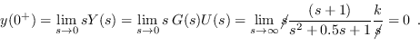
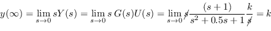

Next: Tool Developed for Open Up: Open Loop LTI Systems Previous: Impulse response Contents Index
Now, consider the system dynamic response subjected to a step input signal with amplitude k.
The step temporal expression is, u(t) = kH(t) where, H(t) is the Heavyside function and therefore, the Laplace transform of u(t) is U(s) = k/s. Consequently, the temporal response of the linear system results,
That is to say: textit the step response with amplitude k of a linear system is equal to the inverse Laplace transform of the transfer function multiplied by k/s.
Consider a linear system of the Exam. 3.1 whose transfer function is given by (3.4). Obtain the dynamic response of such system for a step input.
Firstly, it is studied
For IVT, the following remark is established below.
According to Eq. (3.4), it is easy to proof that, 
For FVT, the following remark is established below.
Where it is denoted as k the step amplitude and K to the static gain of the open loop plant.
According to the FVT and taking into account Eq. (3.4) it is possible to write,

In addition, using the Octave command step , the dynamic open loop response of the system can be determined, as indicated below.
% System transfer function
s=tf('s');
Gs=(s+1)/(s^2+0.5*s+1);
% Step response
step(Gs)
Thus the Fig. 3.3 is obtained.